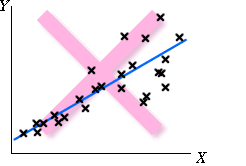

Linearity The response may change nonlinearly with x. |
Constant standard deviation The response may be more variable at some x than others.  |
Normal distribution for errors The errors may have skew distributions.
|
Independent errors When the observations are ordered in time, successive errors may be correlated.
|